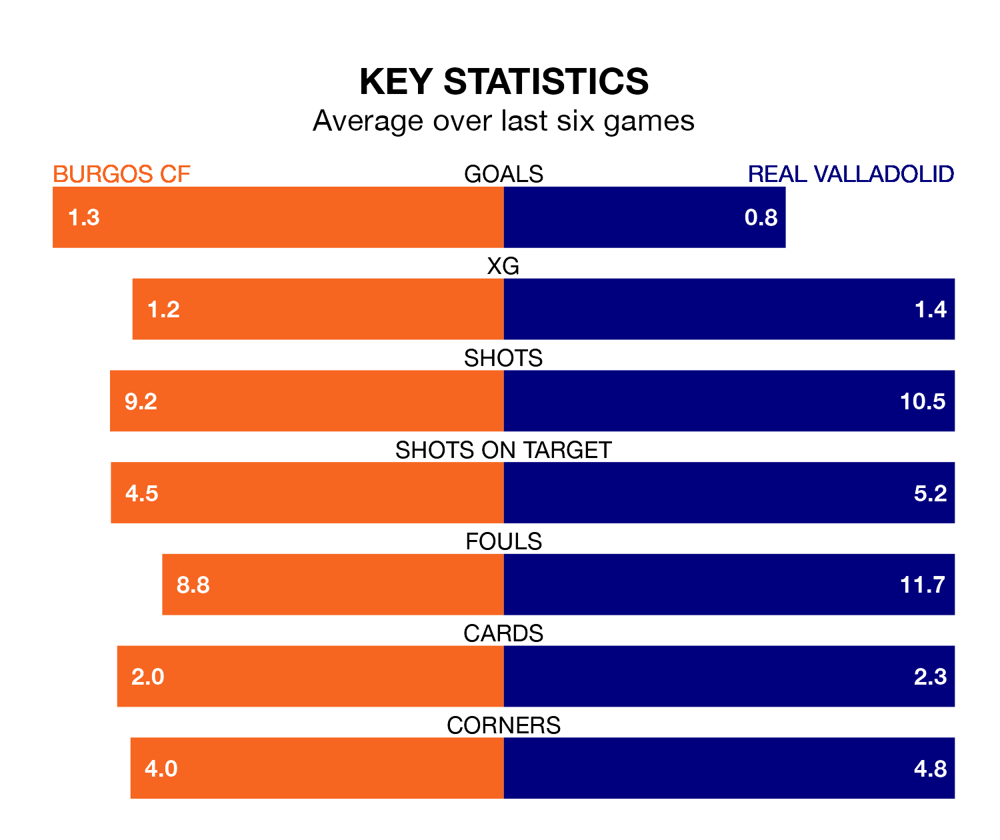

Real Valladolid travel to Estadio Municipal de El Plantío for Saturday's late match against Burgos CF looking to bounce back from defeat last time out in the Segunda División.
Real Valladolid, who sit fourth in the league after 21 games, fell to a 1-0 home defeat to Racing Club de Ferrol on December 21.
They face a Burgos side who secured a draw in their last match, a 3-3 tie with RCD Espanyol, and who sit 11th in the table.
With 29 goals in 21 games so far this season, Burgos are scoring more than average in the league with 1.4 goals per game. But they are conceding more than average too, letting in 27 goals at a rate of 1.3 per game.
Valladolid, meanwhile, are average scorers, with 1.2 goals per game. They have conceded 1.1 goals per game.
In Curro Sánchez, Burgos CF have one of the league's sharpest shooters so far this season. He has notched nine goals in 21 appearances, to sit third in the scoring charts.
His goal rate of one every 199 minutes is slightly quicker than that of Mamadou Sylla Diallo, Real Valladolid's top scorer with a goal every 173 minutes, and a total of six goals in 15 games.
The hosts are in mixed form in the Segunda División, with two wins and four draws from their last six games.
With two wins and a draw over that period, the away side's form is worse – they have taken seven points from 18, compared to Burgos's 10.
Over the last two years, Burgos and Valladolid have played each other twice. Valladolid won one of them and they drew the other.
Their last meeting was on October 1, when Valladolid won 3-0 at home.
Updated: 11:29, 08/01/24